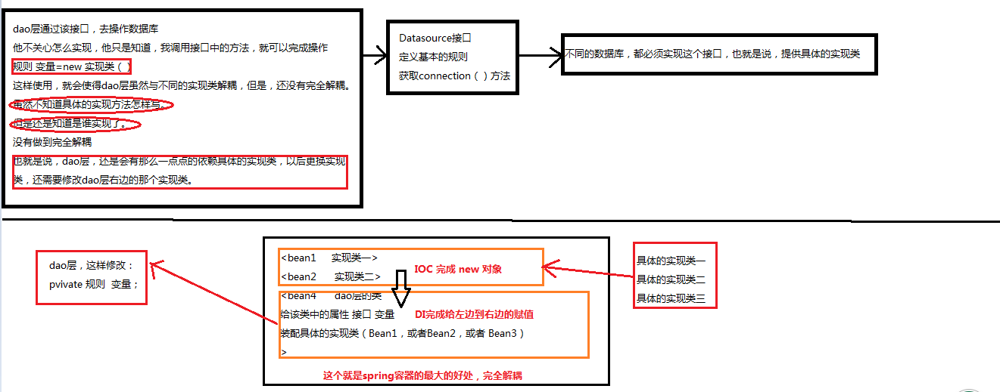

spring是能干什么：
通过接口，和spring，将两个类完全的解耦。
不能出现：
规则 变量=new 实现类（）这样的代码
这样的代码出现的缺点，就是下图中上半部分的展示：

这三个，就彻底解放了程序员，其精华为：

程序员应该准备的东西：
产生类（必须有默认构造）
通过配置文件，告知spring一下东西：
bean（需要为我创建什么对象）
给某一个类的某一个属性DI
给某一个类产生AOP（配置切入点表达式）
配置切面，（切面中的某一个方法，为什么通知）
一、IOC(控制反转)
概念：把对象的创建、初始化、销毁等工作交给spring容器来做
程序员提供具体产生类的代码，（必须有默认构造函数），然后在配置文件中配置，spring就会通过反射，产生该Bean。
然后的可以DI给使用该Bean的Bean，达到解耦目的。
二、Spring容器的结构

三、Spring容器创建对象
- 构造函数 (用的最多)。spring内部默认是调用了HelloWorld这个类的默认的构造函数创建对象
- 静态工厂
- 实例工厂
四、DI依赖注入
DI(依赖注入)
概念：给属性赋值

给pid和 name赋值的过程就是di
通过xml（默认构造器和set方法，默认构造器和自定义构造器方法）
注意：所以在写一个javabean的时候，应该提供属性的setter方法，默认的构造器，带参数的构造器
通过注解方式赋值。
五、spring AOP
当某一个类，是目标类，配置文件中，有切入点表达式的时候，才会出现目标类的代理类，否则，spring产生的对象，都不是代理类。
六、spring 操作数据库
（JDBC 创建模板类，注入DataSource 内部需要connection，开启事务
Hibernate 创建模板类，注入SessionFactory 内部需要session，开启事务
提供模板，注入各自的需要的东西（上面的ds，sf）
我们调用模板中的提供的方法，比如save，insert等等，jdbc传递的是sql，Hibernate传递的是对象。

上面，也就是表明，我们程序员，只要使用基于jdbc或者Hibernate的模板（配置文件中只要注入相应的DataSource或者SessionFactory就可以使模板工作）中的操作数据库的方法（这些个方法，就比如jdbc模板中，完成了获得连接，获取sql对象statement）我们只要写sql语句就行.
模拟模板类中的实现，看看，是不是完成了很基本的操作，非常基本（可以没有事务，统一给声明式事务。）